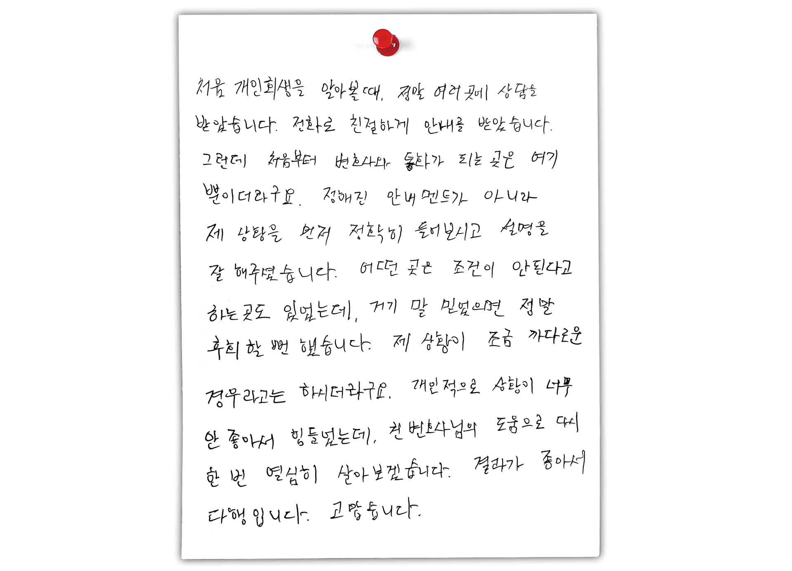
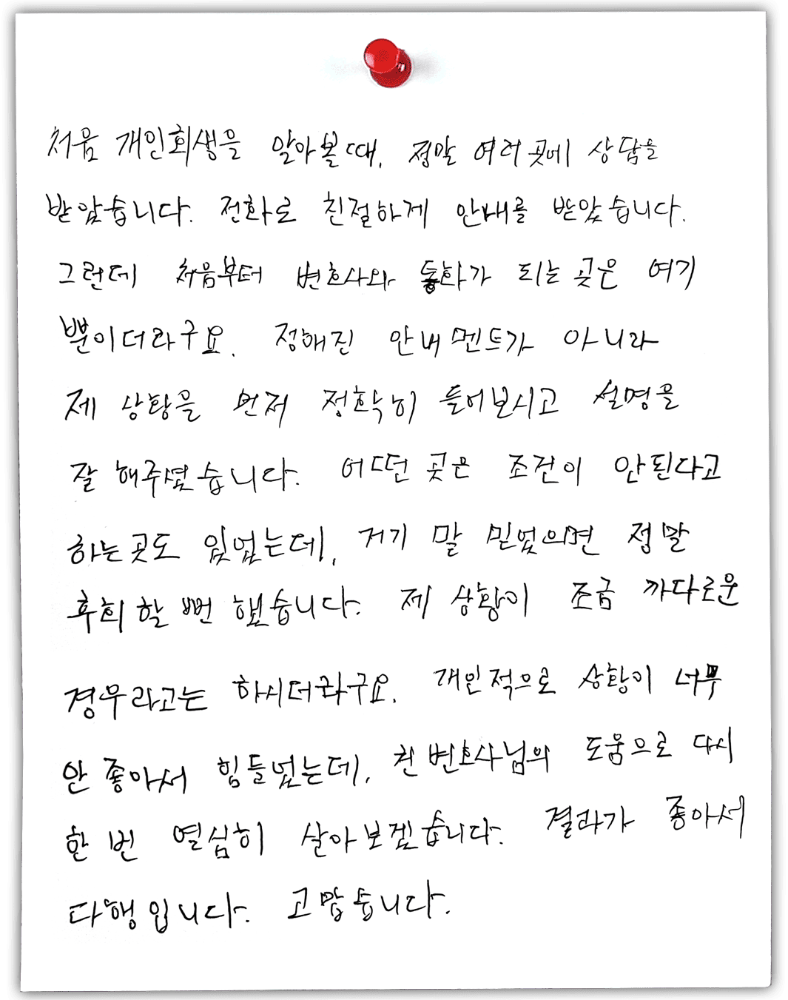
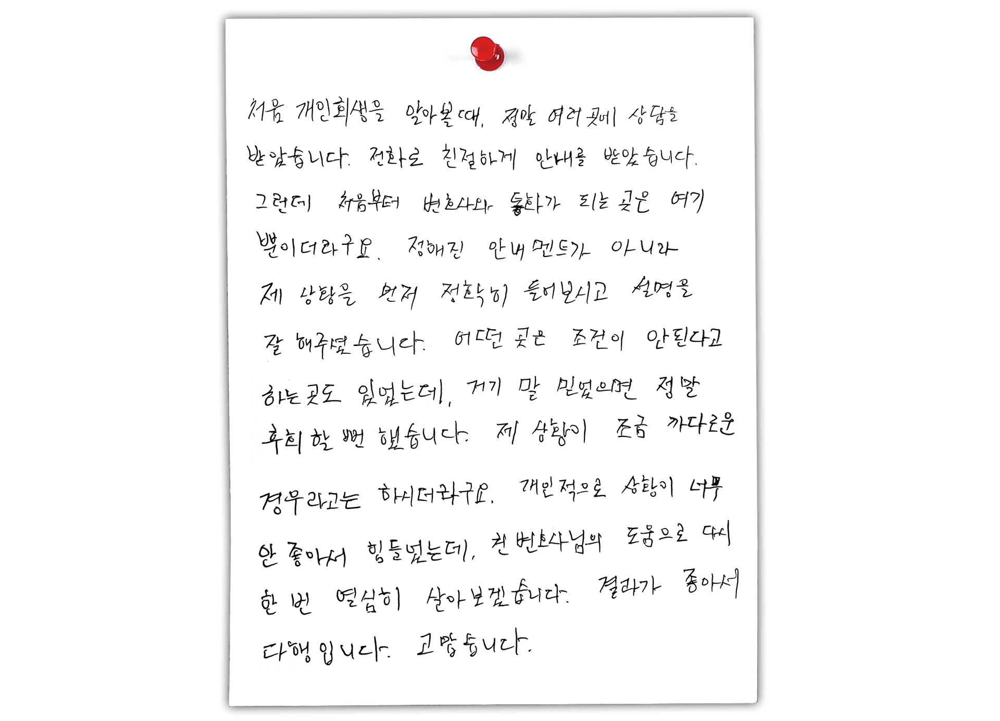
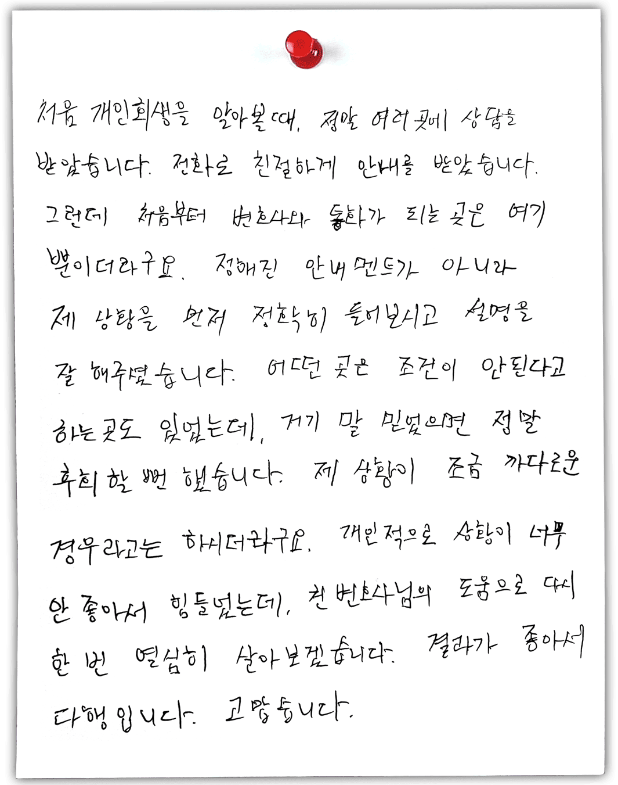
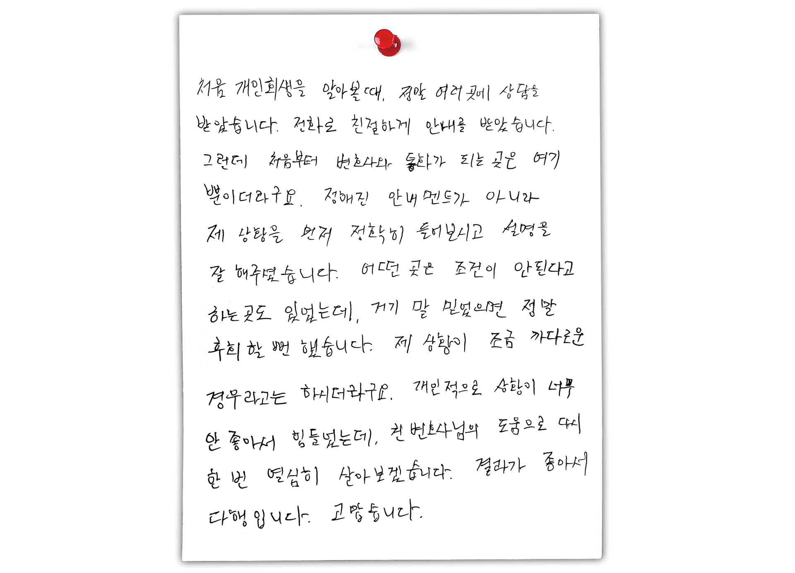
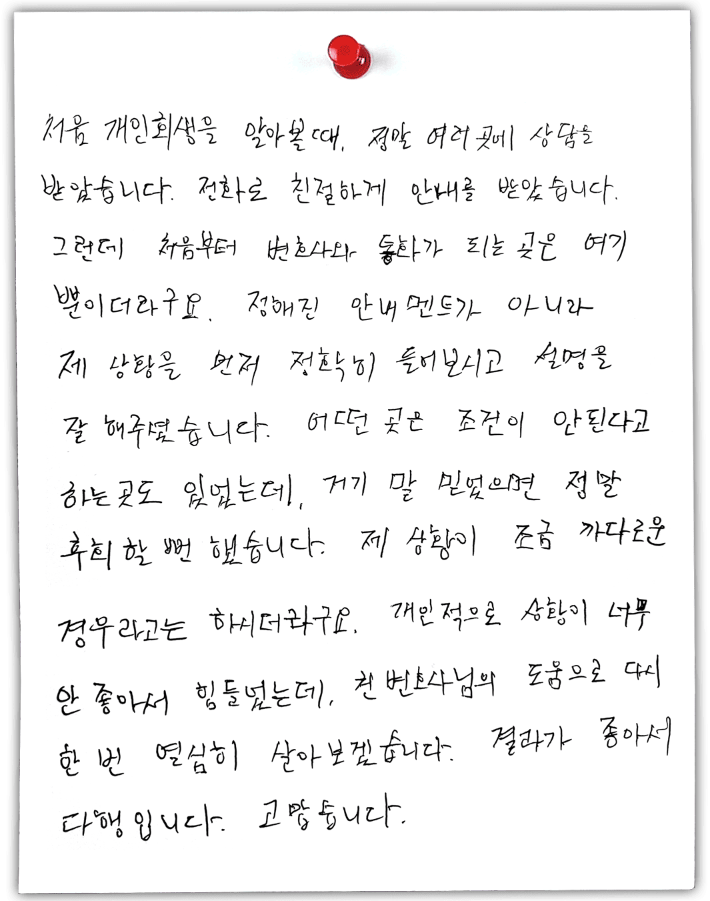

실제 후기
의뢰인 자필 후기
 



안녕하세요. 반갑습니다.
진심회생 책임변호사 권오현입니다
제가 운영하는 진심회생의 핵심원칙은
제가 직접 소통한다는 겁니다.
요즘 불법 사무장들이 설립한 회생센터가
너무도 난립하고 있습니다.
변호사는 이름만 빌려줍니다.
모든 피해는 고객들에게 떠넘겨집니다.
제가 직접 사건을 처리하는 이유입니다.
저와 소통해 보신 후,
신뢰가 가신다면 그때 의뢰를 하십시오
꼭 제가 아니어도 괜찮습니다.
다만, 이제 제대로 된 선택을
반드시 하여야 할 때입니다.
1억 5천만원
회생 전
2천 7백만원
회생 후
다양한 이유로 경제적 난관은
언제든지 발생할 수 있습니다
인생이 내리막이 있다면
다시 올라가면 됩니다
인생의 오르막의 시작을
제가 도와드리겠습니다.
너무 오래 고민하지 마세요
의뢰인 자필 후기


아쉽지만, 모든 분들께서 개인회생 신청이 가능한 것이 아니며, 몇 가지 자격 요건을 갖추고 계셔야 하는데요, 이는 아래와 같습니다.
주식이나 유흥, 비트코인과 같은 도박으로 인한 사행성채무의 경우 기각사유에 해당된다고 규정되어 있어 불가능하다고 생각하시는 분들이 많습니다.
실제로 사행성채무의 경우 개인회생 신청이 되더라도, 법원 측에서 더욱 까다로운 심사가 진행되어 금지명령이 기각되거나 채무 원금 전액을 갚아야 하는 상황이 발생할 수 있는데요.
이 경우, 아무 대리인이 아닌, 개인회생과 관련된 사건 경험이 풍부하며 실력 있는 도산변호사와 함께하는 경우, 이에 대한 돌파구를 찾아내어 쉽게 해결할 수 있으니, 꼭 상담을 진행 해보시기 바랍니다.
법률사무소에 의뢰하는 경우 비용은 2가지로 구분됩니다.
구구절절 긴 말 필요없이 한눈에 파악할 수 있도록 정리해드리겠습니다.
주위 지인들이 모르게 개인회생 진행이 가능한지 궁금해하시는 분들이 계십니다.
특히나 남편이나 아내와 같은 배우자에게 비밀로 한 채 진행하시려는 분들이 많이 계시죠.
우선 결론부터 말씀드리자면, 서류 발급 시 배우자 인증이 필요한 부분이 있어 100% 비밀유지가 가능하다고는 말씀드릴 수 없습니다.
하지만 전문가의 입장에서 솔직하게 말씀드리자면, 채무와 관련된 잦은 독촉전화, 방문추심으로 인해 배우자에게 채무사실이 밝혀지게 될까 초조해하시는 것 보다는, 빠른 사안 접수를 통해 사건을 해결해 나가는 것을 추천 드립니다.
그러실 필요 없습니다.
당 소의 경우 고객분들 가운데 80%이상이 현재 무방문/비대면으로 상담을 진행하고 계십니다.
몇몇 분들께서는 무방문/비대면 상담에 대해 안 좋은 인식을 가지고 계시는데요.
아무래도 의뢰인의 입장에선, 본인의 인생이 바뀔 수 있는 중요한 사건인데, 어떻게 대리인의 얼굴 한번보지 않고 사건을 맡길 수 있는지에 대한 의문을 품으실 수 있다고 생각됩니다.
하지만 무방문/비대면 상담은 현재 흐름이고 대세라 볼 수 있습니다.
단순히 포스트 코로나 시대여서가 아닌, 주변의 변화를 살펴보면, 이전과 많이 다른 양상을 보이고 있죠.
법원에서도 이에 발맞춰, 현재 90%가 넘는 사건들을 전자로 진행하고 있어, 당 소에서도 이를 활용하여 사안을 접수 받고 있습니다.
변호사는 당사자와 관계인의 위임으로 소송에 관한 행위와 일반 법률 사무를 하는 사람입니다.
쉽게 말해서 ‘소송대리인’으로서 회생사건과 관련하여 최초 상담부터 신청서 제출, 각종 법률서면 제출, 인가결정 및 관련된 채권에 대한 새로운 소송까지 변호사 본인의 이름으로 직접 소송대리가 가능합니다.
법무사는 법원과 검찰청의 업무에 관련된 또는 그곳에 제출하는 서류 작성과 그 사무를 처리하기 위한 상담과 자문 같은 부수 사무까지 하는 사람입니다.
다시 말해 법무사는 상담과 신청서를 제출하는 업무까지는 수행할 수 있지만, 소송행위 그 자체를 대리할 순 없습니다.
서류를 대신 작성하고 제출하는 업무의 권한만 있기 때문에 신청서도 법무사 본인의 이름이 아닌, 신청인의 이름으로 제출합니다.
개인회생 사건의 특성상 채권자와의 분쟁을 100% 피할 수 없는 만큼 채권추심이나 소송재판까지 오직 변호사만이 소송대리인으로서 역할을 다할 수 있어 반드시 법무사가 아닌 변호사 사무실로 진행해야 합니다.